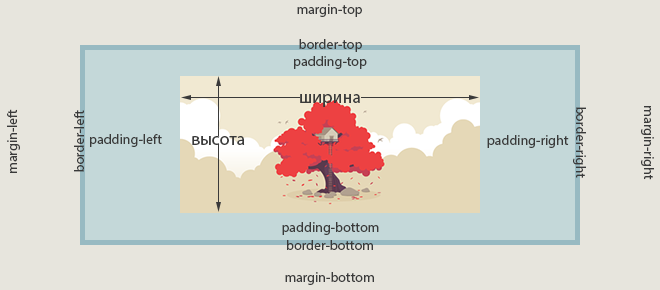

Селектор - это формальное описание того элемента или группы элементов, к которым применяется указанное правило стиля.
selector {
style: properties;
}
Простой селектор представляет собой селектор типа, селектор класса либо id-селектор, за которым могут следовать селекторы псевдоклассов и селекторы атрибутов.
Универсальный селектор
CSS предоставляет универсальный селектор * для выборки всех тегов веб-страницы. Например, если вы хотите, чтобы все отображалось полужирным шрифтом, нужно добавить следующий код:
Использование символа * - более быстрый способ сообщить CSS о выборке всех HTML-тегов веб-страницы:
* { font-weight: bold; }
Пожалуй самый известный случай применение универсального селектора - это отмена внешних и внутрених отступов.
* {
padding: 0;
margin: 0;
}
Кроме того, вы можете задействовать универсальный селектор в составе селектора потомков: применяете стиль ко всем тегам-потомкам, подчиненным определенному элементу веб-страницы. Например, .E * выбирает все теги внутри элемента, имеющего атрибут class со значением .E.
.E * {
....
}
Идентификаторы и классы
Идентификатор (называемый также «ID селектор») определяет уникальное имя элемента, которое используется для изменения его стиля и обращения к нему через скрипты.
#E {
style: properties;
}
При описании идентификатора вначале указывается символ решётки (#), затем идет имя идентификатора. Оно должно начинаться с латинского символа и может содержать в себе символ дефиса (-) и подчеркивания (_).
Классы применяют, когда необходимо определить стиль для индивидуального элемента веб-страницы или задать разные стили для одного тега.
/* Выбирает элемент по значению атрибута class,
который может быть использован повторно несколько раз на одной странице */E.class {
style: properties;
}
/* так же доступно другое написание; без указания имени тэга */.class {
style: properties;
}
Классы удобно использовать, когда нужно применить стиль к разным элементам веб-страницы: ячейкам таблицы, ссылкам, абзацам и др.
Пользовательское имя класса начинается с точки. Имена классов должны начинаться с латинского символа и могут содержать в себе символ дефиса (-) и подчеркивания (_).
К любому тегу одновременно можно добавить несколько классов, перечисляя их в атрибуте class через пробел. В этом случае к элементу применяется стиль, описанный в правилах для каждого класса. Поскольку при добавлении нескольких классов они могут содержать одинаковые стилевые свойства, но с разными значениями, то берётся значение у класса, который описан в коде ниже.
В стилях также допускается использовать запись вида .class1.class2, где class1 и class2 представляют собой имена классов. Стиль применяется только для элементов, у которых одновременно заданы классы class1 и class2.
Контекстные селекторы или селекторы потомка
При создании веб-страницы часто приходится вкладывать одни теги внутрь других. Чтобы стили для этих тегов использовались корректно, помогут селекторы, которые работают только в определённом контексте. Например, задать стиль для тега <b> только когда он располагается внутри контейнера <p>. Таким образом можно одновременно установить стиль для отдельного тега, а также для тега, который находится внутри другого.
p b {
font-weight: 600;
}
Потомок не обязательно должен идти сразу после предка в дереве документа, вроде отношения родитель-ребёнок, но может находиться в любом месте внутри предка. Селекторы потомка создаются пробелом между отдельными элементами в селекторе, создавая новый уровень иерархии для каждого элемента списка.
Порой селекторы потомка заходят слишком далеко, выбирая больше, чем хотелось бы. Иногда должны быть выбраны только прямые дети родительского элемента, а не каждый экземпляр элемента вложенный глубоко внутри предка. В этом случае может быть использован прямой дочерний селектор путём размещения знака больше (>) между родительским и дочерним элементом в селекторе.
Например, article > p является прямым дочерним селектором только когда элементы <p> находятся непосредственно внутри элемента <article>. Любой элемент <p> размещённый вне элемента <article> или вложенный внутри другого элемента, кроме <article>, не будет выбран.
HTML-элементы, как правило, делятся на блочные и строчные.
Разделение элементов на блочные и строчные используется в спецификации HTML до версии 4.01. В HTML5 это двоичное различие заменено более сложным набором категорий контента. Категория «блоков» примерно соответствует категории основного потока в HTML5, а «строчные» элементы аналогичны текстовому контенту. Кроме того, есть и другие категории.
Список блочных элементов
Ниже приведен полный список всех блочных элементов (несмотря на то, что понятие «блочный» технически не относится к новым элементам в HTML5). Как вы можете увидеть, их не так уж и много.
<address>
Контактная информация
<article>
HTML5Содержание статьи
<aside>
HTML5Боковое содержание.
<blockquote>
Длинная цитата.
<canvas>
HTML5Полотно (холст).
<dd>
Описание определения.
<div>
Фрагмент документа.
<dl>
Список определений.
<fieldset>
Группирование элементов формы.
<figcaption>
HTML5Описание для тега <figure>
<figure>
HTML5Группирование медиа-контента с подписью (см. <figcaption>)
<footer>
HTML5Нижняя часть («подвал») раздела или страницы.
<form>
Форма ввода.
<h1>, <h2>, <h3>, <h4>, <h5>, <h6>
Заголовки от первого до шестого уровня.
<header>
HTML5Верхняя часть («шапка») раздела или страницы.
<hgroup>
HTML5Группирование заголовков раздела или страницы.
<hr>
Горизонтальная разделительная линия.
<li>
Пункт списка.
<main>
HTML5Содержит основной контент, уникальный для страницы.
<nav>
HTML5Содержит навигационные ссылки.
<noscript>
HTML5Содержимое, которое показывается, если JavaScript не поддерживается или выключен.
<ol>
Упорядоченный список.
<output>
HTML5Область вывода информации.
<p>
Текстовый абзац.
<pre>
Предварительно форматированный текст.
<section>
HTML5Раздел веб-страницы.
<table>
Таблица.
<tfoot>
«Подвал» таблицы.
<ul>
Неупорядоченный список.
Отличие от строчных(встроенных) элементов
Существует несколько ключевых отличий блочных элементов от строчных.
Блочные элементы занимают всю ширину своего родителя (контейнера), формально создавая «блок» (отсюда и название). При условии что ширина явно не задана.
Высота блочного элемента вычисляется браузером автоматически, исходя из объема его содержимого. При условии что высота элемента явно не задана.
Браузеры обычно отображают блочные элементы с переводом строки до и после элемента(так, блочные элементы можно представить в виде стопки коробок)
Блочные элементы могут отображаться только внутри элемента <body> и его потомков.
Как правило, блочные элементы могут содержать строчные элементы и другие блочные элементы. Неотъемлемой частью этого структурного различия является идея, что блочные элементы создают «более крупную» структуру, чем встроенные элементы.
Исключением является элемент <p>, который не может содержать внутри себя другой элемент <p>, а также любой другой блочный элемент. То есть, элемент <p> может содержать только строчные элементы.
Текст по умолчанию выравнивается по левому краю.
Стандартная блочная модель
Cтандартная блочная модель отвечает на основной вопрос:
Сколько же в итоге места будет занимать элемент?
Ответ следующий:
Область, занимаемая блочным элементом, складывается из его ширины и высоты содержания, (и необязательных) внутренних и внешних отступов,а также, ширины рамок.
Для строчных элементов есть свои особенности.

Схема блочной модели
Область содержимого — это содержимое элемента, например, текст или изображение.
Внутренний отступ задаётся свойством padding. Внутренний отступ — это расстояние между основным содержимым и его границей (рамкой). Если для элемента задать фон, то он распространится также и на поля элемента. Внутренний отступ не может принимать отрицательных значений, в отличие от внешнего отступа.
Внешний отступ задаётся свойством margin. Он добавляет расстояние снаружи элемента от внешней границы рамки до соседних элементов, тем самым разделяя элементы на странице. Внешние отступы всегда остаются прозрачными и через них виден фон родительского элемента.
Значения padding и margin задаются в следующем порядке: верхнее, правое, нижнее и левое.
Граница, или рамка элемента, задаётся с помощью свойства border. Если цвет рамки не задан, она принимает цвет основного содержимого элемента, например, текста. Если рамка имеет разрывы, то сквозь них будет проступать фон элемента.
Внешние, внутренние отступы и рамка элемента не являются обязательными, по умолчанию их значение равно нулю. Тем не менее, некоторые браузеры добавляют этим свойствам положительные значения по умолчанию на основе своих таблиц стилей. Очистить стили браузеров для всех элементов можно при помощи универсального селектора:
* {
margin: 0; /* 0px */padding: 0;
}
Фактическая ширина элемента складывается из ширины полей (внутренних отступов) padding, границ border и внешних отступов margin.
Элемент <DIV>
Элемент <div> является блочным элементом и предназначен для выделения фрагмента документа с целью изменения вида содержимого.
Это своего рода универсальное средство построение разметки страницы. Но не стоит им злоупотреблять.
До HTML5 не было семантической разметки и не было специальных тэгов под заголовок <header>, под меню <nav> и тем более под медиа контент(<audio>, <video>). Разметка велась по большей части тэгом <div> и в результате можно было встретить что то наподобие этого(см. рис.).
Реальный пример кода
Схлопывание вертикальных отступов
Соприкасающиеся вертикальные отступы margin объединяются. При этом ширина общего отступа равна ширине большего из исходных отступов.
Схлопывание отступов
Слияние выполняется только для блочных элементов в нормальном потоке документа. Внешние вертикальные отступы строчных, плавающих и абсолютно позиционированных элементов не сливаются.
Чтобы получить желаемый промежуток, можно задать, например, для верхнего элемента padding-bottom, а для нижнего элемента - margin-top.
Если среди схлопывающихся отступов есть отрицательные значения, то браузер добавит отрицательное значение к положительному, а полученный результат и будет расстоянием между элементами.
Горизонтальные отступы между элементами просто складываются. Например, горизонтальный отступ между двумя элементами с отступами 30px будет равен 60px.
Выподание вертикальных отступов
Если внутри одного блока расположить другой блок и задать ему margin-top, то внутренний блок прижмется к верхнему краю родительского, а у родительского элемента появится отступ сверху, т.е. внутренний блок «выпадет» из родительского блока. Если у родительского элемента также был задан верхний отступ, то выберется наибольшее из значений.
Чтобы избавиться от эффекта выпадания, можно задать родительскому элементу padding-top или добавить border-top: 1px solid transparent.
HTML5Определяет заголовок для работы - преобразует текст в курсивный.
<code>
HTML5Определяет кусок программного кода - преобразует текст в моноширинный.
<del>
Определяет текст, который был удален из документа - отображается перечеркнутым текстом.
<dfn>
Выделяет определения термина - преобразует шрифт в наклонный.
<em>
Определяет выделенный текст - преобразует текст в курсивный.
<i>
Преобразует текст в курсивный.
<iframe>
Определяет встроенный frame.
<img>
Определяет изображение.
<ins>
Определяет текст, который был добавлен в документ - отображает текст подчеркнутым.
<kbd>
Определяет текст вводимый с клавиатуры - преобразует текст в моноширинный.
<mark>
HTML5Определяет важную часть текста.
<q>
Определяет короткую цитату.
<rp>
HTML5Определяет, что показывать браузеру, который не поддерживает тег <ruby>.
<rt>
HTML5Добавляет аннотацию сверху или снизу от символов, заключенных в элементе <ruby>.
<ruby>
HTML5Предназначен для добавления небольшой аннотации сверху или снизу от заданного текста.
<s>
HTML5Определяет текст, который больше не является правильным - отображает текст перечеркнутым.
<samp>
Определяет текст, который является результатом вывода компьютерной программы.
<small>
Определяет текст маленького размера.
<span>
Определяет строчный элемент документа.
<strong>
Определяет важный текст - преобразует шрифт в полужирный.
<sub>
Определяет текст в нижнем индексе.
<sup>
Определяет текст в верхнем индексе.
<td>
Создает ячейку таблицы.
<th>
Создает заголовочную ячейку в таблице.
<var>
Определяет переменную - выделяет текст курсивом.
Отличие от блочных элементов
Как правило, встроенные элементы могут содержать только данные и другие встроенные элементы.По умолчанию, встроенные элементы не начинаются с новой строки, они располагаются друг за другом в одной строке, при необходимости строка переносится.
Строчные элементы являются потомками блочных элементов. Они игнорируют верхние и нижние margin и padding, но если для элемента задан фон, он будет распространяться на верхний и нижний padding, заходя на соседние строки текста.
Ширина и высота строчного элемента зависит только от его содержимого, задать размеры с помощью CSS нельзя. Можно увеличить расстояние между соседними элементами по горизонтали с помощью горизонтальных полей и отступов.
Как правило, строчные элементы могут содержать только данные и другие строчные элементы, за исключением элемента <a>. Этим тегом можно оборачивать целые абзацы, списки, таблицы, заголовки и целые разделы при условии, что они не содержат другие интерактивные элементы — другие ссылки и кнопки.
Для того чтобы верхние и нижние поля и отступы работали для строчного элемента, нужно использовать конструкцию {display: inline-block}. Элемент останется встроенным, но к нему можно будет полноценно применить поля, отступы, задать ширину и высоту.
Строчные элементы предназначены для оформления текста на уровне небольших фраз и отдельных слов. Блочные же элементы предназначены для разметки крупных блоков текста (заголовки, абзацы, списки) и создания сетки.
Иногда бывает необходимо, чтобы строчный элемент вел себя как блочный и наоборот. Для этого необходимо установить соответствующее значение свойства display.
В некоторых случаях, например, требуется наделить строчный элемент характеристиками блочного. Так, превращение ссылки в блок позволяет увеличить полезную площадь ссылки за счёт использования свойств width и height(тем самым получим подобие своего "button").
a {
display: block; /* теперь ссылка будет представлена на странице как блочный элемент,
благодаря чему весь блок, а не только текст становится ссылкой*/width: 100px; /* теперь можно установить ширину и высоту */height: 200px;
}
Строчно-блочные элементы
Существует еще одна группа элементов, которые браузер обрабатывает как строчно-блочные {display: inline-block;}. Такие элементы являются встроенным, но для них можно задавать поля, отступы, ширину и высоту.
Характеристики этих элементов следующие
Внутрь строчно-блочных элементов допустимо помещать текст, строчные или блочные элементы.
Высота элемента вычисляется браузером автоматически, исходя из содержимого блока.
Ширина равна содержимому плюс значения отступов, полей и границ.
Несколько элементов идущих подряд располагаются на одной строке и переносятся на другую строку при необходимости.
Можно выравнивать по вертикали с помощью свойства vertical-align.
Разрешено задавать ширину и высоту.
Эффект схлопывания отступов не действует.
Поведение блочных, строчных и строчно-блочные
Ниже представлен наглядный пример использования свойства {display: inline-block;}
#example0 .elem {
display: inline-block; /* теперь div отображается как сточно блочный элемент */vertical-align: middle; /* выравнивание средней точки элемента по базовой линии родителя
плюс половина высоты родительского элемента. */margin: 10px;
}
Список блочно-строчно-блочных элементов
<audio>
HTML5Аудиоплеер
<button>
HTML5Создает кнопку
<canvas>
HTML5Полотно (холст).
<embed>
HTML5Используется для загрузки и отображения объектов (например, видеофайлов, флэш-роликов, некоторых звуковых файлов и т.д.), которые исходно браузер не понимает.
<input>
Создаeт поле для ввода данных.
<keygen>
HTML5Используется для генерации пары ключей — закрытого и открытого.
<meter>
HTML5Определяет скалярное измерение в пределах известного диапазона.
<object>
HTML5Сообщает браузеру, как загружать и отображать объекты, которые исходно браузер не понимает.
<progress>
HTML5Используется для отображения прогресса завершенности задачи. Изменение значения происходит через JavaScript.
<select>
Создает выпадающий список.
<textarea>
Создает многострочное текстовое поле.
<video>
HTML5Видеоплеер.
Атрибуты тегов
Как Вы, возможно, помните, тэги это метки, указывающие браузеру, как нужно представлять ваш web-сайт. (Например, <br> информирует браузер, что нужно сделать перевод строки). В некоторых тэгах вы можете вводить дополнительную информацию. Такая дополнительная информация называется "атрибут".
Атрибуты тегов - это дополнительные значения, которые расширяют возможности отдельных тегов и позволяют более гибко управлять содержимым контейнеров; настраивают элементы или регулируют их поведение различным способом, чтобы соответствовать критериям пользователей.
Некоторые теги есть смысл использовать только с атрибутами. Наиболее яркий пример — тег <img>, обозначающий изображение. Для него обязательно нужно указывать атрибут src, который задаёт адрес картинки (иначе браузер не сможет загрузить её).
В общем случае тег записывается следующим образом:
Любые атрибуты нечувствительны к регистру, пишутся внутри открывающего тега и содержат имя и значение. В именах атрибутов нельзя использовать пробелы, кавычки, знак больше (>), слэш (/) и равно (=), а также любые символы не определенные в Юникоде. В значениях атрибутов допустимо писать текст и спецсимволы за исключением амперсанда (&), который должен заменяться на &.
Каждый атрибут тега относится к определенному типу (например: текст, число, путь к файлу и др.), который обязательно должен учитываться при написании атрибута. Так, упоминаемый ранее тег <img>, добавляет на веб-страницу рисунок, а его атрибут width задает ширину изображения в пикселах. Если поставить не число, а нечто другое, то значение будет проигнорировано и возникнет ошибка при валидации документа.
Различают несколько способов написания атрибутов и их значений.
Значение по умолчанию
Когда для тега не добавлен какой-либо допустимый атрибут, это означает, что браузер в этом случае будет подставлять значение, заданное по умолчанию. Если вы ожидали получить иной результат на веб-странице, проверьте, возможно, следует явно указать значения некоторых атрибутов.
Порядок атрибутов в тегах
Порядок атрибутов в любом теге не имеет значения и на результат отображения элемента не влияет. Поэтому теги вида <img src="/images/title.gif" width="438" height="118"> и <img height="118" width="438" src="/images/title.gif"> по своему действию равны.
Атрибуты без значений
Допустимо использовать некоторые атрибуты у тегов, не присваивая им никакого значения. Например
Этот атрибут(disabled) не имеет значения, поведение тега определяет лишь наличие этого атрибута. Если такой атрибут указан, подразумевается, что установлено значение «истина», а отсутствие атрибута означает «ложь». Само значение можно не указывать, достаточно написать один лишь атрибут. Также разрешается в качестве значения писать пустую строку или имя атрибута.
Браузеры включают атрибут даже при наличии недопустимых значений вроде true или 1. Но лучше избегать таких решений, поскольку они противоречат спецификации HTML5 и не гарантируют правильную работу.
Значение без кавычек
Значение пишется непосредственно после знака равно идущим вслед за именем атрибута. До и после знака равно можно вставлять любое количество пробелов или обойтись без них.
<imgsrc=link.htmlalt=Картинка>
Здесь атрибутами являются src и alt, а после знака = идёт их значение без кавычек. Поскольку атрибуты разделяются между собой одним или несколькими пробелами, то при отсутствии кавычек легко допустить ошибку, когда браузер воспримет предлагаемое нами значение как атрибут.
<imgsrc=link.htmlalt=Картинка в тексте>
Здесь значением атрибута alt будет слово «Картинка», остальные слова воспринимаются как неверные атрибуты.
Использование двойных кавычек
Значение берётся в двойные кавычки, обычно такая форма указывается для текста.
<inputtype="checkbox" >
Использование одинарных кавычек
Вместо двойных кавычек также допустимо писать одинарные.
<inputtype='checkbox' >
Значения атрибутов разделяются между собой пробелом, поэтому если у вас в качестве значения указывается предложение, обязательно берите его в одинарные или двойные кавычки.
В основном принято писать значения атрибутов тега в двойных кавычках, но допускается и иная форма записи. Опять же повторюсь - пишите значение атрибутов в двойных кавычках.
Кавычки внутри значений
Внутри значений атрибутов не разрешается применять те же кавычки, в которых взято само значение. Но допустимо сочетать разные типы кавычек между собой. Если внутри текста необходимы одинарные кавычки или апостроф, то сам текст следует взять в двойные кавычки.
<imgsrc="r.jpg" alt="Город Р'льех" >
Соответственно, текст содержащий внутри двойные кавычки надо взять в одинарные.
<imgsrc='c.jpg' alt='Такой вид кладки называется "циклопическим"' >
Также вместо двойной кавычки в тексте можно использовать спецсимвол ", а вместо апострофа — '.
Атрибуты data-*
В HTML5 для любого элемента можно использовать собственные атрибуты, начинающиеся с префикса data-. Это позволяет хранить разную информацию, которая может помочь в работе скриптов, а также для оформления элементов через CSS.
Атрибут должен иметь хотя бы один символ в нижнем регистре. Буквы в верхнем регистре хотя и допустимы, но они принудительно будут переведены в нижний регистр, поэтому не дают никакого эффекта. В именах атрибутов можно использовать дополнительные дефисы, как показано в примере
Сами атрибуты никак не выводятся в браузере, поэтому мы увидим обычный список.
Глобальные(универсальные) атрибуты
Наряду с атрибутами, характерными для конкретных тегов, в HTML5 существует и ряд атрибутов, который можно добавлять практически к любым тегам, поэтому входящие в эту группу атрибуты называются глобальными или универсальными. Ниже они перечислены с кратким описанием.
Список глобальных атрибутов тегов HTML
accesskey
Атрибут accesskey позволяет активировать ссылку с помощью некоторого сочетания клавиш с заданной в коде ссылки буквой или цифрой. Браузеры при этом используют различные комбинации клавиш.
class
Задаёт стилевой класс, который позволяет связать определенный тег со стилевым оформлением. В значении допускается указывать сразу несколько классов, разделяя их между собой пробелом.
contenteditable
Сообщает, что элемент доступен для редактирования пользователем — допускается удалять текст, и вводить новый. Также работают стандартные команды вроде отмены, вставки текста из буфера и др.
contextmenu
Устанавливает контекстное меню для элемента. В качестве значения указывается идентификатор меню созданного с помощью тега <menu>.
dir
Задает направление и отображение текста — слева направо или справа налево. Браузеры обычно самостоятельно различают направление текста, если он задан в кодировке Юникод, но с помощью атрибута dir можно указать, в каком направлении отображать текст. Для арабских и еврейских символов приоритетным является направление, заложенное в Юникод, поэтому на них атрибут dir действовать не будет.
draggable
Позволяет перетаскивать элемент для дальнейшего манипулирования с ним.
dropzone
Указывает, что делать с перетаскиваемым элементом.
hidden
Скрывает содержимое элемента от просмотра. Такой элемент не отображается на странице, но доступен через скрипты.
id
Задаёт идентификатор — уникальное имя элемента, которое используется для изменения его стиля и обращения к нему через скрипты. Идентификатор в коде документа должен быть в единственном экземпляре, иными словами, встречаться только один раз.
lang
Текст документа может быть набран как на одном языке, так и содержать вставки на других языках, которые могут различаться по своим правилам оформления текста. Например, для русского, немецкого и английского языка характерны разные кавычки, в которые берется цитата. Чтобы указать язык, на котором написан текст внутри текущего элемента и применяется атрибут lang. Браузер использует его значение для правильного отображения некоторых символов.
spellcheck
Указывает браузеру проверять или нет данный элемент на правописание и грамматику в тексте. Хотя атрибут можно устанавливать практически для всех элементов, результат будет заметен только для полей форм, а также редактируемых элементов (у них установлен атрибут contenteditable).
style
Применяется для определения стиля элемента с помощью правил CSS.
tabindex
Атрибут tabindex устанавливает порядок получения фокуса при переходе между элементами с помощью клавиши Tab. Переход происходит от меньшего значения к большему, например от 1 к 2, затем к 3 и так далее. При этом строгая последовательность не важна, допускается пропускать какие-то числа и начинать с любой цифры. Если значения tabindex у элементов совпадают, тогда учитывается их порядок появления в коде.
title
Создаёт всплывающую текстовую подсказку, которая появляется при наведении курсора на элемент. Вид такой подсказки зависит от браузера, настроек операционной системы и не может быть изменен с помощью HTML-кода или стилей.